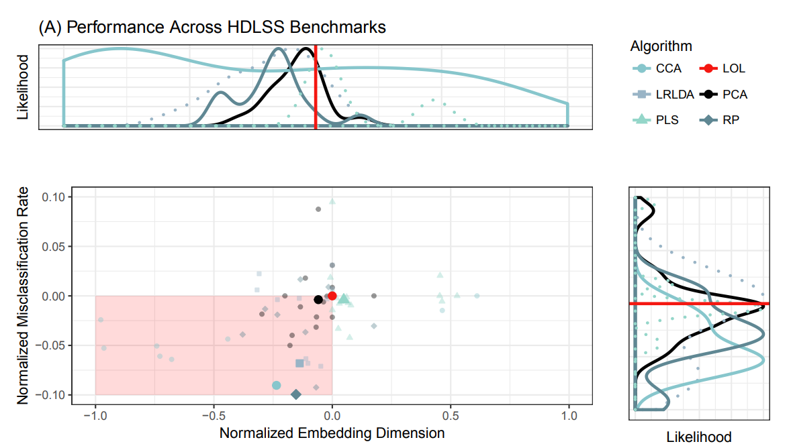

Dimensionality Reduction is a Ubiquitous Problem
- Data: $X \in \mathbb{R}^{n \times p}$
- Problem: in real data, $p \gg n$
- Presents many computational issues
- Low-Rank: cannot compute inverse covariance matrix
- slow, even if we can operate on low-rank data
- Goal: Find $X_k \in \mathbb{R}^{n \times k}$, where $k \ll p$
Supervised High-Dimensionality; Low Sample-Size Presents Unique Issues
- Data: $X \in \mathbb{R}^{n \times p}$; $Y \in \{1, ..., K\}^n$
- Same computational issues as before
- Goal: find optimal embedding $X_k$ where the projection vectors optimize our classification problem
Existing Solutions Have Pitfalls
- PCA: ignore $Y$ all-together
- LDA: only capture covariance structure
- PLS: iterative approach that produces poorly understood geometries
LOL Is Simple
- Goal: estimate $A \in \mathbb{R}^{d \times k}$ where $XA = X_k$ improves classification performance
- $A_{LOL}$: capture the difference of the means, as well as the unique covariance structure
- Gain the information captured by the difference in means, and also capture the class-conditional covariance
LOL Performs Well on Real Data

Links
Acknowledgements
Joshua T. Vogelstein, Greg Kiar, Randal Burns, Xi-Nian Zuo, Vince Calhoun, Sephira Ryman, Rex Jung, Daniel Marguiles, Vikram Chandrashekhar, Disa Mehembere, Will Gray Roncal, Brian Caffo, Carey Priebe, Cameron Craddock, Michael Milham
DARPA {XDATA, SIMPLEX, GRAPHS}; NSF {NeuroNex}; NIH; Kavli
Questions?